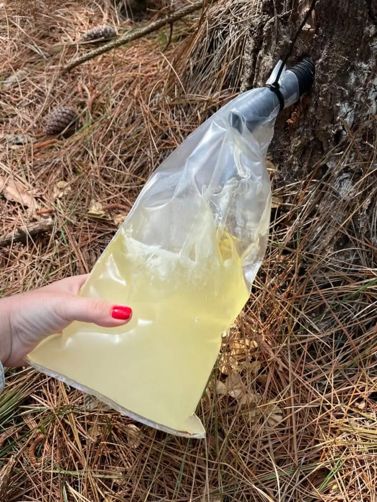

março 25, 2025 • 5A Inteligência
A resinagem é uma prática florestal fundamental para a produção de resina de pinus, uma matéria-prima amplamente utilizada nas indústrias química, farmacêutica e de adesivos.
Mas como funciona esse processo e quais os benefícios para o setor florestal? Vamos te explicar! 👇
A resinagem é o processo de extração da resina bruta de árvores do gênero Pinus, principalmente Pinus elliottii e Pinus taeda. A partir dessa resina, são obtidos produtos como:
Essa prática promove um uso sustentável da floresta, já que não exige o corte das árvores.
O processo é cuidadosamente planejado para maximizar a produção sem prejudicar o crescimento das árvores:
O ciclo da resinagem pode durar de 8 a 15 anos, conforme o manejo e a espécie.
O Brasil é destaque mundial na produção de resina, com forte presença no sul e sudeste. Com monitoramento adequado e gestão eficiente, é possível garantir produtividade, sustentabilidade e diversificação de renda.
Acompanhe o blog da 5A Inteligência e Engenharia para ficar por dentro das melhores práticas em produção florestal sustentável! 🚀